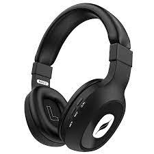

Test Image - 
Output onMicrosoft Azure -
Bottle
Output onMobilenet Model -
Water Bottle
Result -
Mobilenet is more Accurate
Test Image 2 - 
Output onMicrosoft Azure -
Footwear
Output onMobilenet Model -
Running Shoe
Result -
Mobilenet is more Accurate
Test Image 3 -
Output onMicrosoft Azure -
Shape
Output onMobilenet Model -
Soccer ball
Result -
Mobilenet is more Accurate
Test Image 4 - 
Output onMicrosoft Azure -
Device
Output onMobilenet Model -
Remote Control
Result -
Microsoft Azure
Test Image 5 - 
Output onMicrosoft Azure -
Headphones
Output onMobilenet Model -
Knee pad
Result -
Microsoft Azure is more accurate
Result -
Mobilenet
I have tested 5 images. Mobilenet identified 3 images correctly while as Microsoft Azure
identified 2 images correctly.So, according to the Case study Mobilenet is more accurate.